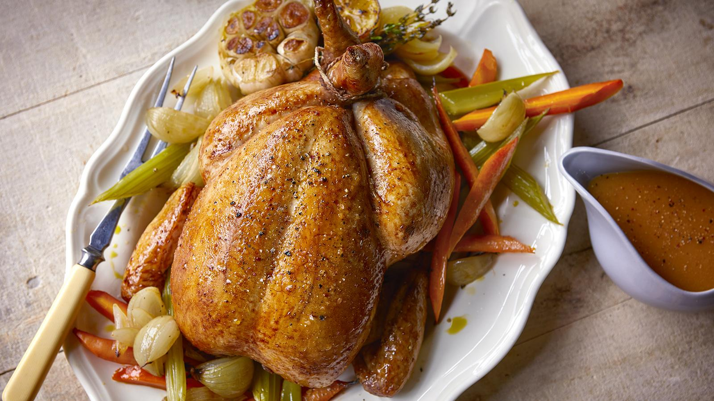

Chicken

Description :
The chicken is roasted slowly in the oven, with golden crispy skin and tender meat inside.
Ingredients :
- Whole chicken
- Olive oil or butter
- Salt
- Black pepper
- Garlic cloves
- Fresh herbs (like rosemary, thyme, or parsley)
- Lemon
- Onion
- Carrots (optional)
- Potatoes (optional)
Instructions :
- Preheat your oven to 425°F (220°C).
- Prepare the chicken by removing any giblets from the cavity and patting it dry with paper towels.
- Rub the chicken all over with olive oil or melted butter. Season generously with salt and black pepper, both inside and out.
- Stuff the cavity with crushed garlic cloves, fresh herbs, and lemon halves.
- If desired, place chopped onions, carrots, and potatoes around the chicken in the roasting pan.
- Truss the chicken by tying the legs together with kitchen twine and tucking the wing tips under the body.
- Place the chicken breast-side up on a rack in a roasting pan.
- Roast the chicken in the preheated oven for about 1 hour and 15 minutes, or until the internal temperature reaches 165°F (74°C) when measured at the thickest part of the thigh.
- Baste the chicken occasionally with the pan juices to keep it moist.
- Once cooked, remove the chicken from the oven and let it rest for about 10-15 minutes before carving. This allows the juices to redistribute throughout the meat.
- Carve and serve the roasted chicken with your favorite sides. Enjoy!